地政学
ベイルートは東地中海に面し、シリア、パレスチナ、湾岸、欧州を結ぶ政治の結節点です。港、空港、大使館、報道機関、宗派政党が狭い都市に集まり、危機と地域紛争が街路の安全、物価、移動に直結する首都でもあります。

🇱🇧 レバノン / 西アジア / World City Atlas
地中海の港、金融と出版の記憶、宗派政治、戦争の傷、移民の送金、夜の文化、海辺の日常が重なるレバノンの首都です。
都市の骨格
ベイルートは狭い半島状の海岸に高密度の街区を重ね、背後のレバノン山脈、空港、港湾、宗派ごとの地区、再開発された中心部、海辺の散歩道を短い距離で結びます。
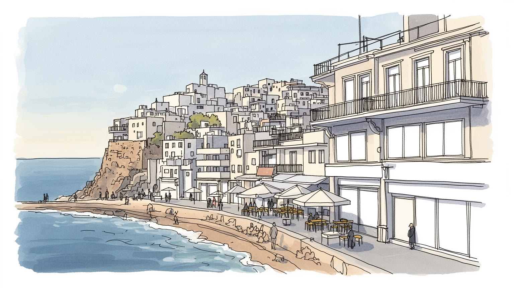
ベイルートは東地中海に面し、シリア、パレスチナ、湾岸、欧州を結ぶ政治の結節点です。港、空港、大使館、報道機関、宗派政党が狭い都市に集まり、危機と地域紛争が街路の安全、物価、移動に直結する首都でもあります。
銀行、港湾、大学、病院、出版、広告、観光、飲食、建設、送金関連の仕事が都市を支えます。通貨危機後は賃金、電力、燃料、医薬品の不安が重く、専門職、店員、移民家事労働者、若者の海外流出が経済の現実を示す街です。
マロン派、スンナ派、シーア派、ギリシャ正教、アルメニア系、ドゥルーズなどの共同体が近接し、アラビア語、フランス語、英語が混ざる。音楽、出版、映画、食、祈り、追悼が、分断を抱えながら都市文化を厚くします。
海岸通り、ハムラ、ジェマイゼ、マル・ミカエル、国立博物館、鳩岩、食堂は旅を引き寄せるが、住民には停電、家賃、渋滞、医療費、ゴミ、記憶の傷が日常です。美しい海辺の背後に生活の粘りが見える都市です。
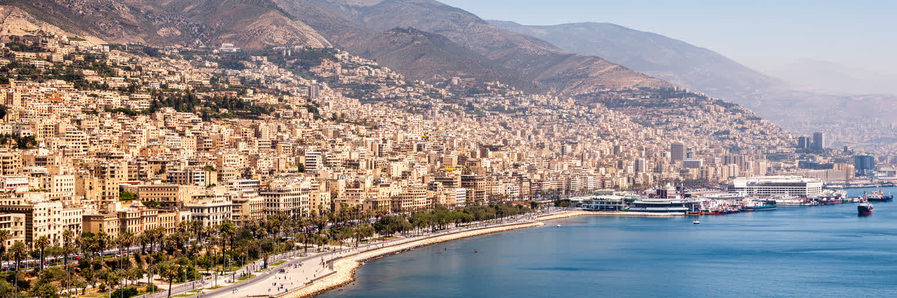
ベイルートの都市性は、地中海に突き出す海岸の狭さと、そこに集められた港、空港、官庁、大学、銀行、住宅地の近さから生まれます。レバノンは国土が小さく、背後には山地が迫るため、首都は単なる行政中心ではなく、輸入品、旅客、外交、報道、文化がまず通過する入口になります。港は穀物、燃料、建材、消費財を受け入れ、海岸道路は北のトリポリ、南のサイダ、国境方面へ視線を伸ばします。シリア内戦、パレスチナ難民、イスラエルとの緊張、湾岸諸国との金融関係は、遠い国際問題ではなく、港湾保険、航空便、物価、治安警戒、投資判断に現れます。海は開放を与える一方、輸入依存の脆さも露出させます。停電や燃料不足が起きると、都市の高密度な生活はすぐに不安定になります。ベイルートを読むには、港のクレーンと海辺の遊歩道、山へ上がる道路、空港へ向かう幹線を一つの系として見る必要があります。地中海の眺めは明るいが、その水平線は交易、亡命、戦争、送金、帰郷の方向でもあります。小さな首都であるほど、外部世界との結び目が濃く、国際情勢の変化が街角の価格や会話に早く届きます。港湾の動きが鈍れば、パンの小麦、病院の機材、建設資材、燃料配送まで影響します。海を向く都市であることは、広い世界へ開く力であると同時に、外から来る衝撃を最初に受け止める宿命でもあります。
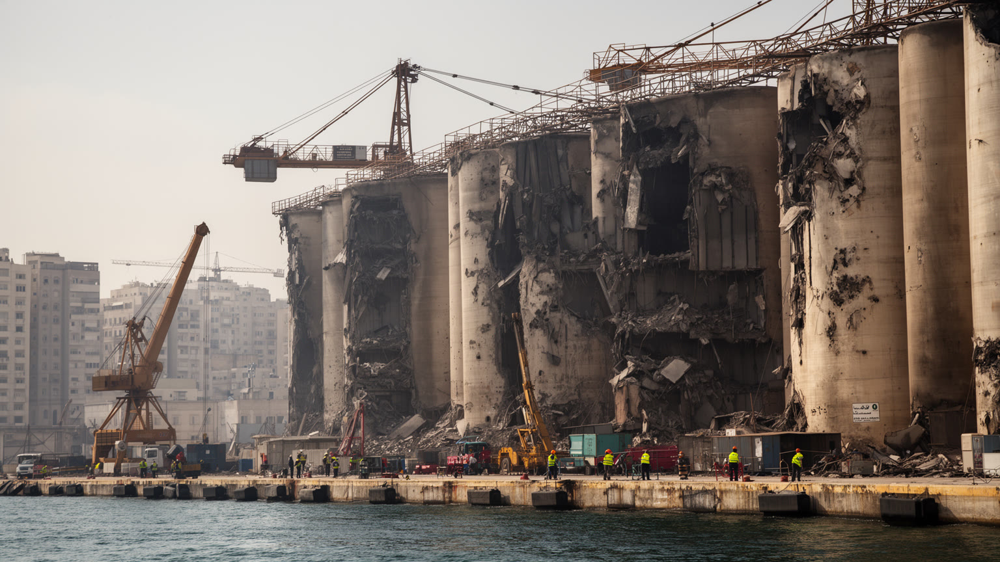
二〇二〇年八月四日の港湾爆発は、ベイルートの都市経験を決定的に変えました。港に保管されていた大量の硝酸アンモニウムが爆発し、周辺の住宅、店、病院、学校、文化施設に甚大な被害を与え、多くの死傷者を出しました。ジェマイゼ、マル・ミカエル、カランティナなどの地区では、窓、扉、石造の家、家族の記憶が一瞬で破壊されました。復旧は住民、ボランティア、建築家、海外からの支援、地域団体によって進められましたが、責任追及や補償、港湾管理の改革は政治の停滞に阻まれ続けました。爆発は災害であると同時に、国家の管理不全、汚職、無責任への怒りを可視化しました。修復されたカフェや新しい店舗は生活の回復を示しますが、家賃上昇や投機によって、被災した住民や小商いが戻れない場所もあります。観光客にとって活気ある通りでも、住民には音、粉じん、喪失、裁判の遅れが記憶として残ります。港湾爆発後のベイルートを読むには、瓦礫が片づいたかどうかだけでなく、誰が修理費を負担し、誰が町に残れ、誰の声が政策に届いたのかを見る必要があります。復興は建物の再建だけではなく、信頼を取り戻す長い作業です。病院の窓が割れたまま患者を受け入れた記憶や、近隣同士でガラスを掃いた時間も都市の歴史です。修復された街区の明るさには、喪失を抱えたまま生活を再開した人びとの負担が含まれています。
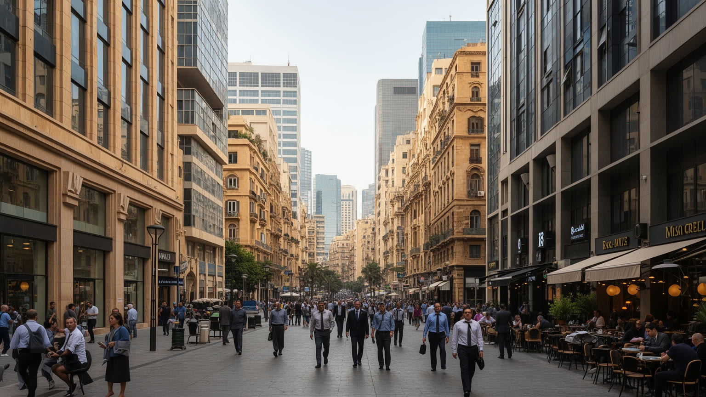
ベイルートは長く、銀行、商社、保険、法律、広告、出版、観光を束ねる東地中海のサービス都市として知られてきました。国外に暮らすレバノン人の送金や湾岸資本も流れ込み、英語、フランス語、アラビア語を使い分ける専門職が都市の国際性を支えました。しかし二〇一九年以降の金融危機は、預金の凍結、通貨価値の急落、物価高、公共サービスの劣化を通じて、都市経済の前提を大きく崩しました。銀行街の建物が残っていても、そこで働く人や店を営む人の収入、購買力、将来設計は変わりました。医師、看護師、技術者、デザイナー、大学教員、若い専門職が国外へ出る一方、残る人びとは副業、外貨収入、家族送金、発電機代の分担で生活を組み立てます。カフェ、レストラン、配送、清掃、警備、家事労働の現場では、賃金の通貨、交通費、電力不足が直接の問題になります。移民家事労働者は雇用主の危機に巻き込まれ、保護の薄さも露呈しました。ベイルートの労働を読むことは、かつての金融都市の輝きと、危機下で毎日店を開け、病院を回し、授業を続ける人びとの持久力を同時に見ることです。経済は数字だけでなく、冷蔵庫、通勤、学費、薬代に現れます。ドルで支払える人と現地通貨だけで暮らす人の差は、同じ店の棚の前でもはっきり出ます。危機は都市を止めるだけでなく、働く意味と公平さを問い直させています。
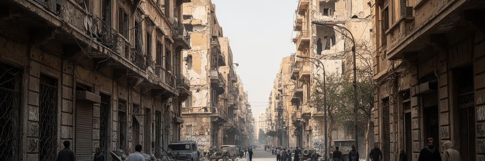
ベイルートを歩くと、華やかな海辺やカフェの近くに、内戦の記憶がまだ層として残っていることに気づきます。一九七五年から一九九〇年まで続いたレバノン内戦では、都市は宗派、政党、民兵、外国勢力の境界に裂かれ、中心部にはグリーンラインと呼ばれた分断線が走りました。戦後の再開発は高級店舗と広場を整えましたが、弾痕を残す建物、空き地、記念されない喪失、家族の沈黙は、都市の別の記憶を伝えます。内戦は過去の出来事であるだけでなく、住宅選択、学校、政治支持、結婚、治安への感覚に影を落とします。誰がどの地区で安心するか、どの道を避けるか、どの名前の地名に反応するかは、世代を越えて共有される経験です。一方で、戦後生まれの若者は音楽、大学、夜の街、デジタル文化を通じ、分断の記憶を別の形で越えようともしています。ベイルートの難しさは、破壊と再生が同じファサードに重なる点にあります。きれいな再開発を見れば復興だけが見え、傷跡だけを見れば住民の生活力を見落とします。都市の記憶は記念碑だけでなく、修理された階段、戻ってきた店、語られない家族写真、爆音に敏感な身体に宿っています。内戦を知らない世代も、親の警戒心や学校で語られない歴史を通じて、その余韻を受け取ります。だから記憶は過去の説明ではなく、現在の信頼関係を測る静かな尺度でもあります。
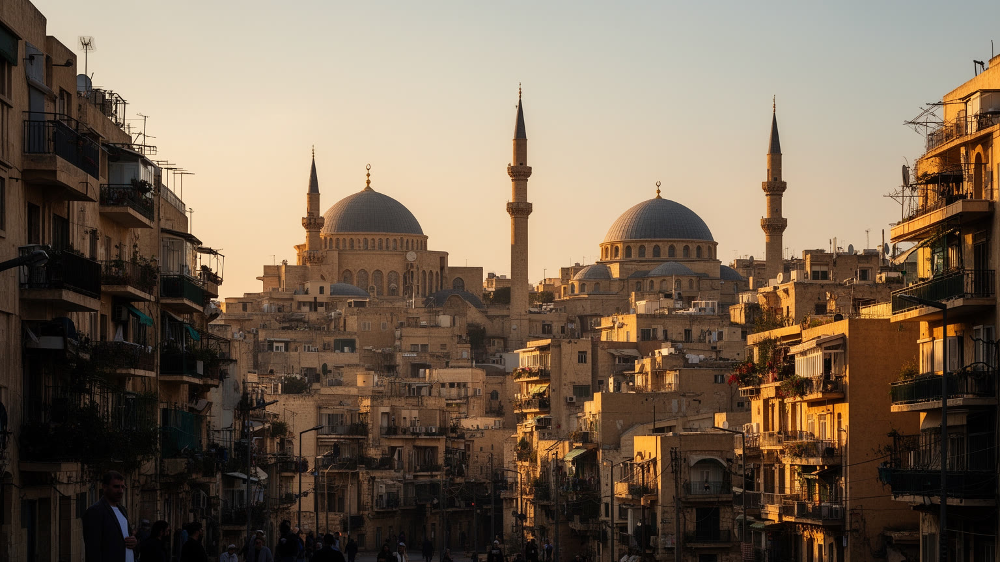
ベイルートの宗教生活は、教会、モスク、修道院、慈善施設、学校、墓地、家庭の儀礼が近距離で重なるところに特徴があります。日曜のミサ、金曜礼拝、ラマダンの食事、クリスマス、アシュラ、聖人祭、家族の葬儀や結婚式は、街の時間と音を変えます。宗派は政治制度の単位であるだけでなく、親族関係、学校選択、食の作法、祝日の過ごし方、相互扶助の回路でもあります。ベイルートでは、同じ通りから教会の鐘と礼拝の呼びかけが聞こえることがありますが、その近さは必ずしも単純な調和を意味しません。内戦の記憶や地域情勢が緊張を高める時期には、宗教的な標識や旗が安全と不安の目印にもなります。一方で、日々の買い物、職場、大学、病院、文化活動では、共同体を越えた関係も普通に生まれます。宗教を観光名所としてだけ見ると、生活を守る制度や感情の複雑さが見えません。小さな礼拝所、慈善の食事、病院の支援、学校の校門、葬列の通過を追うと、信仰が都市の福祉、記憶、政治を同時に支えていることが分かります。ベイルートの宗教地図は固定された境界ではなく、毎日の挨拶、助け合い、警戒、祝祭によって更新される近隣の地図です。危機の時には教会やモスクが食料配布や医療相談の窓口にもなります。信仰は個人の祈りにとどまらず、国家サービスの隙間を埋める生活基盤として働いています。
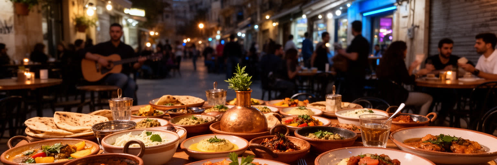
ベイルートの食と夜の文化は、危機の多い都市で人が関係をつなぎ直す重要な場です。メゼ、焼き肉、魚、香草、パン、菓子、コーヒー、アルコールを囲む食卓は、家族、友人、仕事仲間、帰国した親族を結び、宗派や階層の違いを越える会話の余地を作ります。ハムラ、ジェマイゼ、マル・ミカエルのバー、ライブハウス、食堂、路地の店は、音楽、政治談義、恋愛、抗議の余韻が混ざる都市の舞台です。ただし夜の自由は、停電、燃料費、警備、家賃、外貨価格、爆発の記憶に左右されます。店が開き続けることは単なる娯楽ではなく、従業員、仕入れ先、演奏者、清掃、タクシー、家族の収入を支える仕事でもあります。観光客が感じる華やかさの背後では、住民が物価と将来不安を抱えながら、食卓や音楽を生活の支えにしています。ベイルートの夜は危機を忘れる場所であると同時に、危機を語り合う場所です。皿を分ける作法、店先の椅子、海からの風、古い建物の窓明かりは、都市が壊れても人が集まる力を示します。食と夜を読むことは、ベイルートの文化を消費することではなく、暮らしの緊張と回復力が同じテーブルに座っていることを理解することです。外で食べる時間は、狭い住まいや停電からの逃げ場にもなり、都市の公共性を静かに広げています。夜遅くの会話や音楽は、若者が残る理由を探す場にもなります。
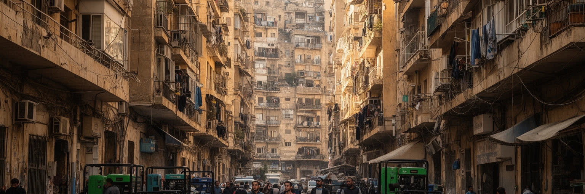
ベイルートの暮らしは、住宅の場所とインフラの不安定さによって大きく分かれます。中心部の再開発地区や海沿いの高級住宅、古い集合住宅、戦後に増築された建物、難民や低所得者が暮らす過密な地区は、短い距離の中に並んでいます。家賃や不動産価格は、通貨危機、国外資金、投機、爆発後の修復費によって揺れ、若い世帯や単身者には負担が重いものになりました。停電が続くため、多くの建物は地区ごとの発電機に頼り、住民は電気代、水、エレベーター、冷蔵庫、インターネットを絶えず調整します。水道、廃棄物処理、道路補修、公共交通の弱さも、家計と時間を削ります。高層建物の眺めが良くても、階段を上る高齢者、薬を冷やす必要のある家庭、在宅で働く若者には停電が深刻な問題になります。住宅は宗派や階層の地図とも重なり、どの近隣に住むかは学校、病院、親族、政治的な安心感を左右します。ベイルートの都市生活を理解するには、カフェや観光地だけでなく、発電機の音、貯水タンク、壊れた歩道、修理中の窓を見ることが重要です。インフラの弱さは単なる不便ではなく、都市への信頼と将来設計を削る力です。古い建物を守りたい住民と、修復費を払えず売却を迫られる家族の間には痛みがあります。住まいは資産である前に、危機の中で都市に踏みとどまるための最後の足場です。
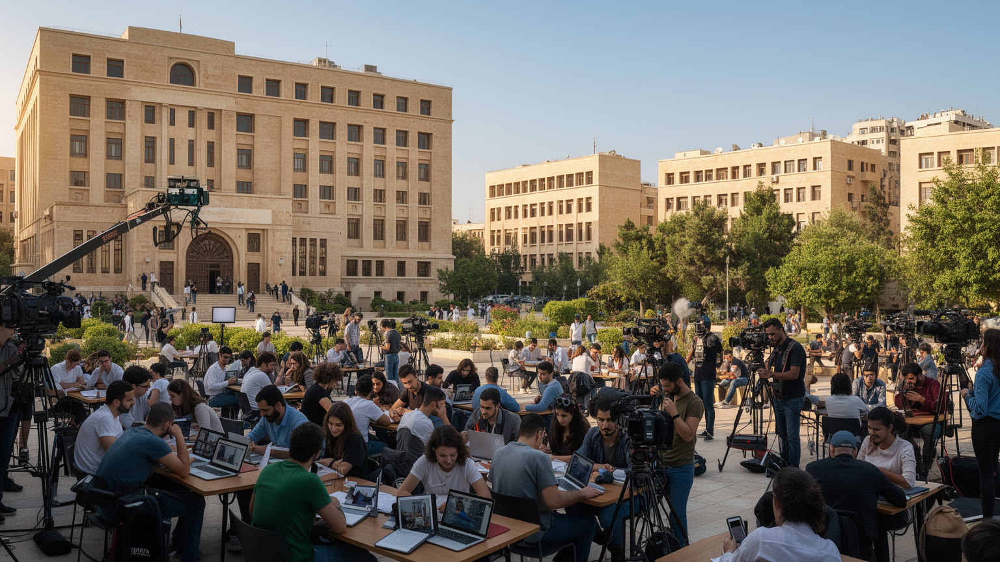
ベイルートの文化は、アラビア語を土台に、フランス語と英語が重なる言語環境から大きな力を得ています。大学、出版社、新聞、テレビ、広告、音楽、映画、デザイン、ギャラリー、演劇、小さな書店は、レバノン国内だけでなくアラブ世界全体の議論や表現とつながってきました。ハムラの書店やカフェ、アシュラフィーエのギャラリー、マル・ミカエルの音楽や飲食の場は、政治的緊張のなかでも実験的な文化を育てます。言語の切り替えは単なるしゃれた都市性ではありません。教育機会、階層、移民経験、宗派、海外との親族関係を映し、どの言葉で怒り、冗談を言い、恋愛し、抗議するかを分けます。内戦、占領、爆発、危機を経験した都市だからこそ、歌、風刺、映画、写真、壁画は記録と抵抗の役割を持ちます。文化産業は華やかに見えても、停電、資金不足、検閲の圧力、市場の小ささ、国外移住によって常に脆い条件に置かれています。それでもベイルートは、壊れた都市を語り直す能力を失っていません。多言語の会話、古い映画館の記憶、独立系出版社、即興のライブは、危機を単なる沈黙にしないための都市の技術です。表現は生活の余裕ではなく、社会を読み解く道具でもあります。大学の講義室、ラジオ番組、路上の風刺、家族の食卓は、同じ政治的疲労を別の声で語ります。言葉の混ざり方そのものが、外へ開きながら内側の傷を抱える都市の姿を示しています。
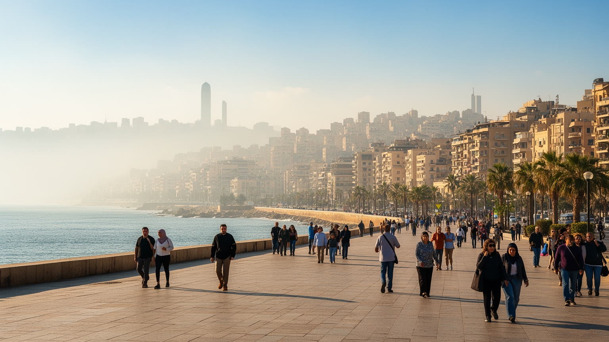
ベイルートの海辺は、都市の緊張を一時的にほどく公共空間です。コルニーシュでは、朝の散歩、釣り、ランニング、家族の外出、若者の会話、屋台の飲み物、鳩岩を眺める観光客が同じ歩道に集まります。高級住宅やホテルが並ぶ場所もあれば、誰でも海を見られる場所もあり、海岸は階層差を映しながら共有の余白を作ります。暑い夏には海風が逃げ場になり、停電で冷房が使えない家から外へ出る理由にもなります。ただし、海辺の自由は無条件ではありません。民間開発、海岸アクセスの制限、汚染、交通量、治安への不安は、誰が海に近づけるかを変えます。ベイルートの住民にとって、海は観光写真の背景であるだけでなく、経済危機や政治不信のなかで、体を動かし、友人と話し、深呼吸する生活の場所です。内陸の狭い街区や坂の住宅地から海へ下りる行為には、都市の圧力から少し距離を取る意味があります。夕暮れの海岸通りを歩くと、宗派や階層の違いを越えて同じ景色を見る瞬間が生まれますが、背後には家賃、失業、停電、家族の心配が戻ってきます。海辺の美しさは逃避ではなく、困難な都市生活を続けるための小さな呼吸です。公共交通が弱い都市では、海岸まで来られる人と来られない人の差もあります。それでも海を眺める時間は、所有されにくい都市の共有財産として大きな意味を持っています。
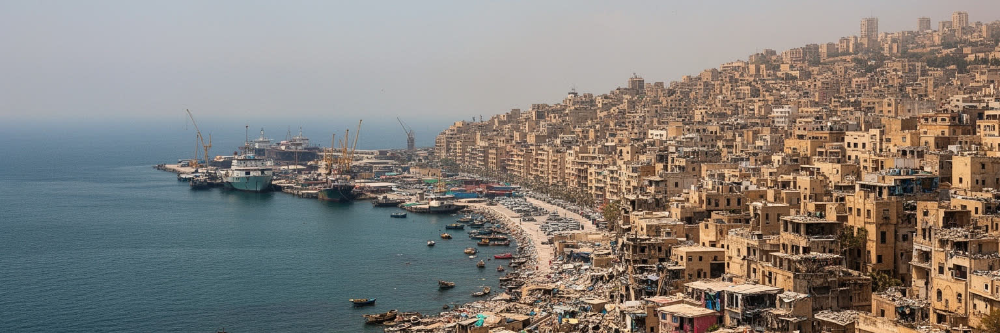
ベイルートを世界都市として読む理由は、人口や経済規模の大きさだけではありません。東地中海の港、アラブ世界の出版とメディア、宗派政治、内戦の記憶、金融危機、港湾爆発、難民と移民、ディアスポラ、夜の文化、食卓の豊かさが、狭い都市空間に極端な密度で重なるからです。ここでは、国際関係が海運と空港に現れ、政治制度が学校や病院の選択に入り込み、通貨危機がカフェの値段と薬の在庫に反映されます。ベイルートはしばしば、自由で洗練された都市、壊れた都市、腐敗した国家の首都、抵抗する文化都市として語られますが、どれか一つでは足りません。住民は失望しながらも働き、笑い、学び、出国を考え、戻る家族を迎え、海辺を歩きます。都市の力は、危機を美化することではなく、危機のなかでも関係をつなぎ直す実践にあります。ベイルートを読むには、華やかな夜景と発電機の音、銀行街と預金者の怒り、宗教施設と共同体の福祉、港の傷と海の明るさを同時に見る必要があります。世界都市の価値は、安定した成功物語だけでなく、失敗、記憶、移動、再建を通じて世界の脆さを可視化する力にもあります。小さな首都で起きる危機は、金融、難民、エネルギー、食料、都市統治がどれほどつながっているかを示します。だからベイルートは地域都市であると同時に、現代世界の不安を凝縮して見せる都市でもあります。